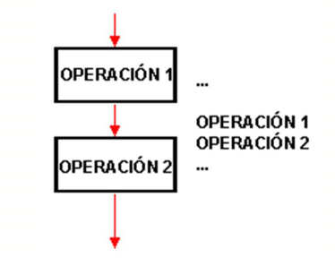

Pseudocódigo
Pseudocódigo
Created by edme88
Pseudocódigo
¿Qué les parece que es el pseudocódigo?
¿Cómo lo definirían con sus palabras?
¿Conocen la etimología de la palabra?
Pseudocódigo: Concepto
Es un "falso lenguaje", que tiene una estructura muy similar al lenguaje natural y sirve para poder expresar algoritmos y programas de forma independiente del lenguaje de programación.
Pseudocódigo: Ejemplo
Inicio
a = 0;
b = 0;
repita
imprimir "Introduzca el primer número"
leer -> a
si a no es un numero entonces
imprimir a " no es un valor válido, intente de nuevo."
fin si
hasta a es un numero
repita
imprimir "Introduzca el segundo número"
leer -> b
si b no es un numero entonces
imprimir b " no es un valor válido, intente de nuevo."
fin si
hasta b es un numero
c = a + b
imprimir "La suma de " a " y " b " es " c
Fin
Pseudocódigo: Ventajas
- Comunicar y representar ideas que puedan ser entendidas por programadores que conozcan distintos lenguajes.
- El programador puede concentrarse en la lógica y estructuras de control y no preocuparse de las reglas de un lenguaje de programación específico.
Pseudocódigo: Ejercicio
Traducir el anterior Pseudocódigo a un diagrama de flujo.
Es un algoritmo escrito en algún lenguaje de programación de computadoras.
Estructura de un Programa
Un programa puede ser escrito utilizando tres tipos de estructuras de control:
- Secuenciales
- Selectivas o de decisión
- Repetitivas
Estructura de un Programa
Las Estructuras de Control determinan el orden en que deben ejecutarse las instrucciones de un algoritmo: si serán recorridas una luego de la otra, si habrá que tomar decisiones sobre si ejecutar o no alguna acción o si habrá repeticiones.
Estructura Secuencial
Es la estructura en donde una acción (instrucción) sigue a otra de manera secuencial.
Las tareas se dan de tal forma que la salida de una es la entrada de la que sigue y así en lo sucesivo hasta cumplir con todo el proceso.
Esta estructura de control es la más simple, permite que las instrucciones que la constituyen se ejecuten una tras otra en el orden en que se listan.
Estructura Secuencial

¿Dudas, Preguntas, Comentarios?